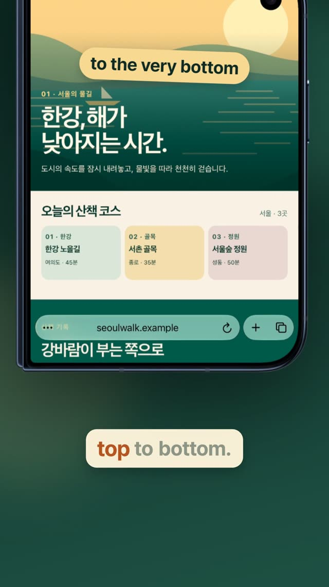
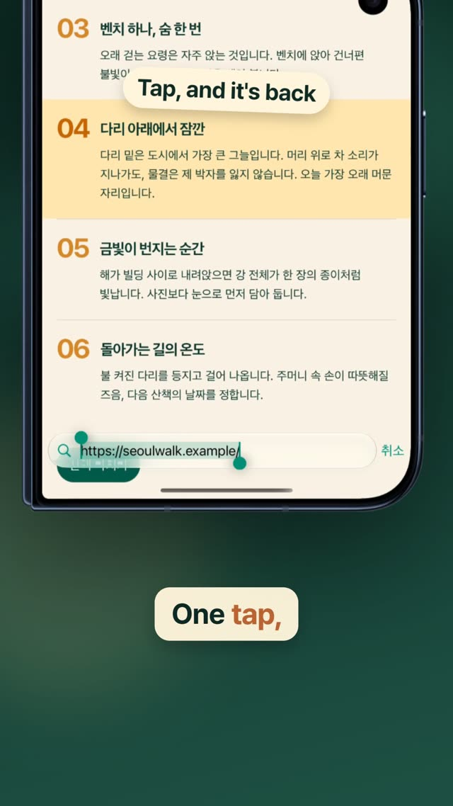

Fill the folded iPhone Duo screen with the web
On a folded screen, bars and margins leave little room for the page itself. Full Screen Browser is built to give that space back to the web.
Get Full Screen Browser on the App Store
How it works
1. From top to bottom
Open a page and it runs from the top of the display down behind the address bar at the bottom.

2. Scroll and the bar shrinks
Scroll down and the address bar shrinks into a small capsule, leaving more room to read.

3. Tap to bring it back
Tap the small capsule once and the full address bar returns for typing a URL or searching.
Get Full Screen Browser on the App Store
Screens were recorded from the real app running in a simulator. The finger markers show where the screen was touched.